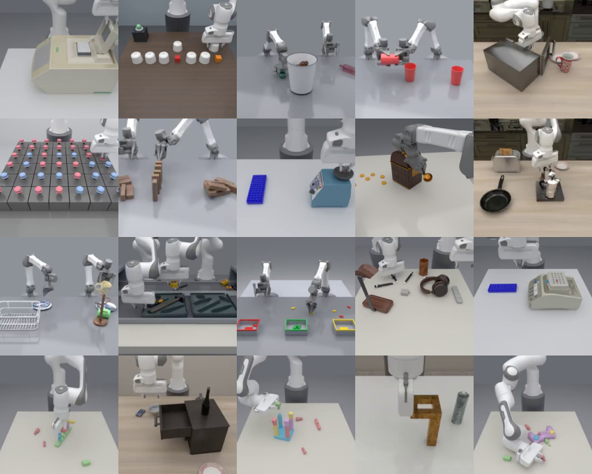
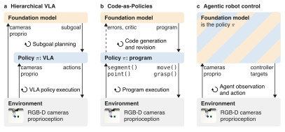
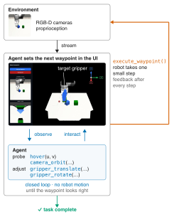
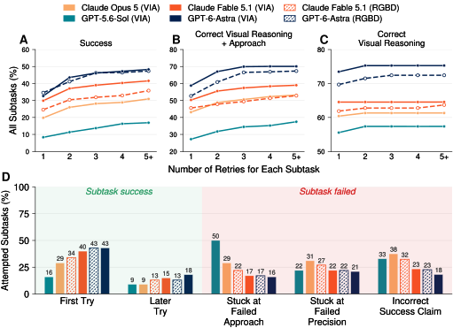

A benchmark of long-horizon manipulation tasks for agents that control robots directly
Anonymous authors · paper under double-blind review
TL;DR. Frontier agents can now act as robot policies: they look at camera images and send end-effector
commands. RoboARCade is a benchmark of 22 long-horizon tasks across three embodiments that measures how well
they do it. The best agent completes 49.2% of subtasks.

Agentic robot control

The setting. In agentic robot control the foundation model is the policy. It observes the
cameras and proprioception and outputs controller targets directly.

The VIA interface. The agent adjusts a virtual target gripper in a 3D workspace until it
looks right, then executes the waypoint. The robot takes one small step and the agent sees the result.
Method
Task suite. 22 tasks curated from open-source simulation benchmarks plus original assets. They
include tracking cubes through a shell game, a 42-button Lights Out puzzle, a strongbox and toolbox packing with
many sequential subtasks, and precise placement under millimetre tolerances.
Long horizon, three embodiments. A rollout averages 3,311 simulation steps, about 166 s at 20 Hz.
Tasks use a single Franka Panda, bimanual Pandas or bimanual YAM arms.
Wide randomization, photorealistic views. Object placements and task conditions are randomized per
seed, and the agent's camera feeds are rendered in Blender at every waypoint.
Two interfaces.VIA provides an interactive 3D workspace with a virtual target gripper.
Multi-view RGBD provides color, depth and calibration, and executes end-effector commands at once. Both
use the same simulator and controller.
Sandboxed agents, automatic grading. Agents run in a sandbox without access to simulator state,
task files or grades. Each task defines a sequence of subtasks, checked from the simulator state after the scene
comes to rest.
Autonomous improvement. The agent learns from a successful episode in context (ICL), or distills it
into a text prompt and revises that prompt with graded rollouts (T1, T2).
Zero-shot results
Agent
Interface
Success (%)
Cost per trial ($)
Turns per EEF
Calls per EEF
GPT-5.6 Sol
VIA
16.9
25.13
3.7
3.3
Claude Opus 5
VIA
30.9
56.86
5.0
5.7
Claude Fable 5.1
Multi-view RGBD
36.5
30.40
1.0
1.7
Claude Fable 5.1
VIA
41.5
51.04
2.2
6.9
GPT-6 Astra
Multi-view RGBD
47.3
13.39
1.3
1.3
GPT-6 Astra
VIA
49.2
32.47
2.3
3.0
22 tasks, 5 seeds each. Success is the share of rubric subtasks completed. Turns and calls are per
distinct end-effector (EEF) command.

Where agents fail. A to C: the share of subtasks succeeded, with a correct approach, and with
correct visual reasoning within N tries. D: how attempted subtasks end. Visual understanding is rarely the
problem. Stronger agents fail more on precision than on approach, and even GPT-6 Astra incorrectly claims
success on 18% of attempted subtasks.
Retries help with approach and precision. For Astra with VIA, subtask success rises from 33% on the
first try to 48% after five or more tries.
Agents do not reliably know when they are done. They incorrectly claim success on 18% to 38% of
attempted subtasks. VIA reduces these claims compared with multi-view RGBD.
The interface trades cost for success. VIA adds 5.0 points for Fable and 1.9 for Astra, but uses
about twice the model turns per command.
Autonomous improvement
GPT-6 Astra, 5 tasks × 10 trials
Success (%)
Cost per trial ($)
Baseline
54.0
28.23
In-context success demo (ICL)
72.7
30.64
Text prompt, round 1 (T1)
62.5
30.78
Text prompt, round 2 (T2)
72.0
22.77
On a task with no successful episode, a prompt written from five failed attempts reaches 60%
success, and its revision reaches 5 of 5. Precision errors and incorrect success claims persist under every
method.
Rollouts
GPT-6 Astra with VIA, solved rollouts, sped up. Each video shows the two Blender-rendered camera
feeds the agent sees.
Shell game · track cubes through swaps, then line them up
Lights Out 6×7 · plan presses on 42 buttons
Set up a PCR run · seat the plate, close and latch the lid, turn the knob
Start incubation · load two tubes, run the program, return the tubes
Handover dominos · bimanual: stand five blocks in a line, then knock them over
Cup pyramid · bimanual: stack three cups upside down